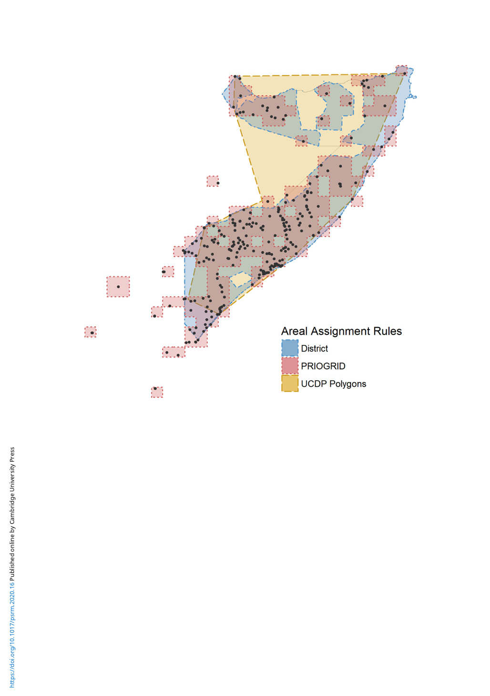

98 Kyosuke Kikuta
Figure 1. Zones of the Somali Civil War.
Note: The figure maps conflict zones of the Somali Civil War (1989–2017) created by existing zoning methods. All of the results are cre-
ated from the same dataset of conflict events (UCDP GED; black dots).
larger area that includes Ethiopia’s Ogaden region, which has no record of conflict events. The
profound differences in how conflict zones can be defined from a given set of underlying data
suggest that empirical findings may be sensitive to the choice of areal unit. How can we define
conflict zones in a way that is less dependent on areal-unit assumptions?
I argue that the extant zoning methods rest on strong assumptions about the areal assignment of war
zones, which can potentially result in misleading pictures. I demonstrate this by formalizing a zone as a
summary function that maps locations and (if necessary) other substantive information onto the pres-
ence/absence of conflict events. From this perspective, these approaches not only impose strong con-
straints on the zoning function, but also assume that the mapping has no stochastic error. However,
since a conflict zone is a function, we can readily apply statistical methods to estimate the zones.
Statistically estimating conflict zones presents a special challenge, however; while we can observe
the presence of conflict events and their locations, we do not have direct observations about their
absence. Although one might consider that the lack of recorded conflict events within particular geo-
graphical boundaries—such as grid cells or administrative units—would constitute absence data, the
construction of the absence data is not as straightforward as one might think. Importantly, it requires
pre-defined areal units, and the results may differ depending on which areal units one uses.
Furthermore, since locations near conflict events are less likely to be “real” absence observations
than locations farther from the events, one might also need to build a sampling scheme that accounts